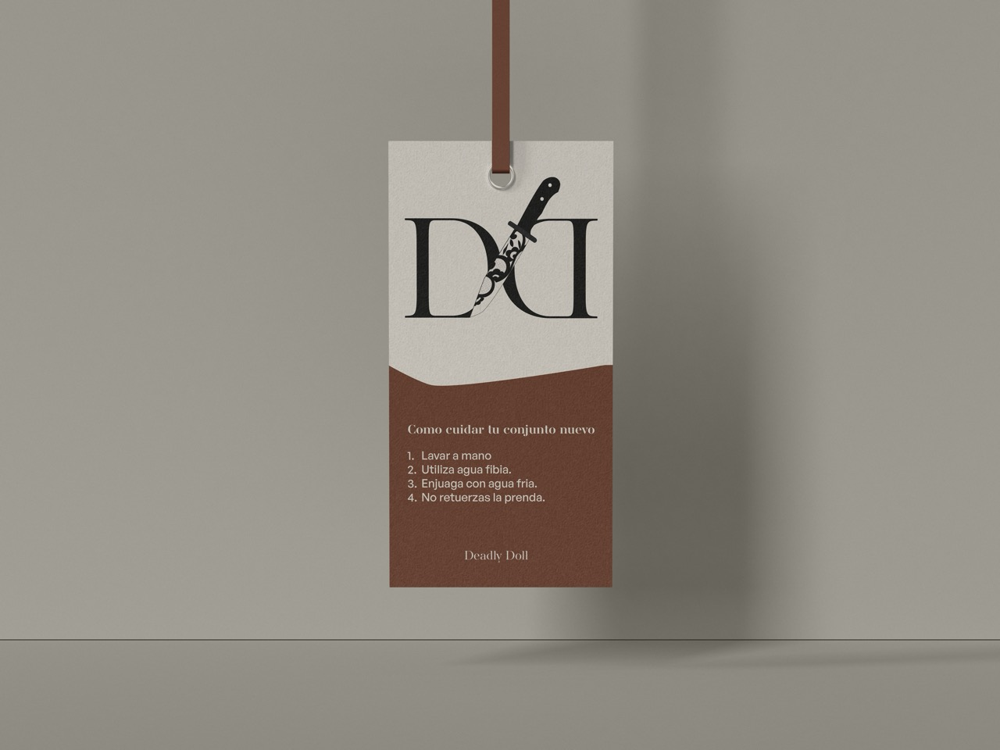
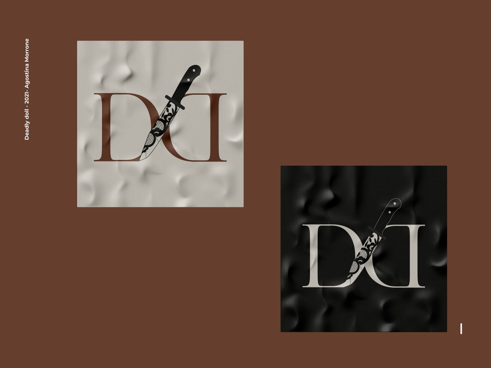

Construir una identidad con personalidad propia.
El desafío fue desarrollar un lenguaje visual distintivo que transmitiera el carácter de la marca, permitiéndole diferenciarse y generar una imagen reconocible dentro de su categoría.

Diseño de identidad visual para una marca de lencería. Exploración gráfica, desarrollo de logotipo, packaging, etiquetas y aplicaciones para redes sociales.

Deadly Doll es una marca de lencería que busca construir una identidad propia y diferenciarse a través de un universo visual con carácter. El proyecto parte de la necesidad de desarrollar un lenguaje gráfico que represente su personalidad y se mantenga presente en cada punto de contacto con el público.
El desafío fue desarrollar un lenguaje visual distintivo que transmitiera el carácter de la marca, permitiéndole diferenciarse y generar una imagen reconocible dentro de su categoría.
Trabajé en la construcción de la identidad visual, desarrollando el logotipo y sus recursos gráficos. También diseñé el packaging, las etiquetas, los stickers y las piezas para redes sociales, buscando mantener una misma línea estética en todas sus aplicaciones.
El sistema visual permite mantener una comunicación coherente entre el packaging, las etiquetas y las redes sociales. Cada aplicación refuerza la personalidad de Deadly Doll y contribuye a construir una identidad más fácil de reconocer y recordar.


